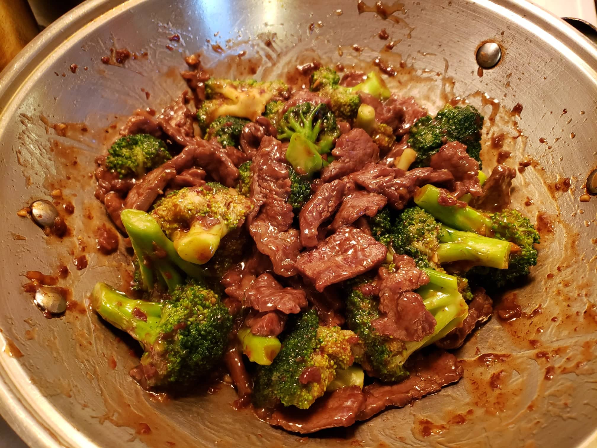

Beef and Broccoli

Ingredients:
Marinade:
- 1 lb Flank steak
- 1/4 tsp Baking soda
- 3 tbsp Water
- 1 1/2 tsp Cornstarch
- 2 tsp Vegetable oil
- 1 tsp Oyster sauce
Sauce:
- 2/3 cup low sodium chicken stock
- 1 1/2 tsp Brown sugar
- 1 1/2 tbsp Soy sauce
- 1 tsp Dark soy sauce
- 1 tbsp Oyster sauce
- 1/2 tsp Sesame oil
- 1/8 tsp White pepper
Other Ingredients:
- 4 cups broccoli florets
- 3 tbsp Vegetable oil
- 2 cloves Garlic, minced
- 1/4 tsp Ginger, minced
- 1 tbsp Shaoxing wine
- 2 1/2 tbsp Cornstarch, mixed with 3 tbsp Water
Instructions:
- In a bowl, add the sliced beef, baking soda, and water. Massage the beef with your hands until all the liquid is absorbed. Mix in the cornstarch, oil, and oyster sauce and set aside to marinate overnight.
- Prepare to blanch the broccoli by boiling about 6 cups of water in a pot. Blanch the broccoli for about 60 seconds or more if you want it less crunchy.
- While the water is coming to a boil, make the sauce mixture by mixing together the chicken stock, sugar, soy sauce, dark soy sauce, oyster sauce, sesame oil, and white pepper. Set aside.
- Heat 2 tablespoons of oil in your wok over high heat until smoking. Sear the beef on both sides until browned (about 2-3 minutes). Turn off the heat, remove the beef from the wok, and set aside.
- Set the wok over medium heat and add another tablespoon of oil. Add in the garlic and ginger. Stir the garlic and ginger for 5 seconds and then pour the Shaoxing wine around the perimeter of the wok.
- Add in the sauce mixture and stir the sauce around the sides of the wok to deglaze it. Make sure to scrape up all the brown bits from searing the beef. Bring the sauce to a simmer. Stir the cornstarch and water slurry to ensure it’s well combined, and drizzle the mixture into sauce while stirring constantly. Allow it to simmer and thicken for 20 seconds.
- Toss in the blanched broccoli and seared beef along with any juices. Mix everything together over medium heat until the sauce coats the beef and broccoli. If the sauce seems thin, turn up the heat and reduce it further, or add a bit more cornstarch slurry. If the sauce is too thick, add a splash of chicken stock or water.